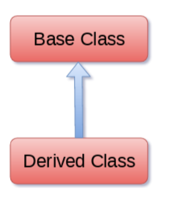

|
Наследование в Python – важный аспект
объектно-ориентированной парадигмы. Наследование обеспечивает
возможность повторного использования кода в программе, потому
что мы можем использовать существующий класс для создания нового
класса вместо того, чтобы создавать его с нуля.
При наследовании дочерний класс получает
свойства и может получить доступ ко всем элементам данных и
функциям, определенным в родительском классе. Дочерний класс
также может предоставлять свою конкретную реализацию функциям
родительского класса. В этом разделе руководства мы подробно
обсудим основы наследования в Python.
В python производный класс может наследовать базовый класс,
просто указав базу в скобках после имени производного класса.
Рассмотрим следующий синтаксис, чтобы наследовать базовый класс
в производный класс.

Наследование позволяет
создавать новый класс на основе уже существующего класса. Наряду
с инкапсуляцией наследование является одним из краеугольных
камней объектно-ориентированного программирования.
Ключевыми понятиями наследования являются подкласс и суперкласс.
Подкласс наследует
от суперкласса все публичные атрибуты и методы.
Суперкласс еще
называется базовым (base class) или родительским (parent class),
а подкласс - производным (derived class) или дочерним (child
class).
Синтаксис для наследования классов выглядит следующим образом:
class подкласс (суперкласс):
методы_подкласса
Super().init() в Python — это вызов метода инициализации из родительского класса. 3
Это гарантирует, что при создании объекта дочернего класса как атрибуты родительского, так и дочернего класса будут правильно инициализированы.
Когда один класс становится наследником другого, то все атрибуты класса-предка
(надкласса, superclass) становятся доступны классу-потомку
(подклассу, subclass) — наследуются (достаются
в наследство).
Что дает наследование
Наследование позволяет выделить общее
для нескольких классов поведение и вынести его
в отдельную сущность. То есть наследование является средством переиспользования
кода (code reuse) — использования
существующего кода для решения новых задач!
Наследование позволяет получить новый класс, немного
отличающийся от старого. При этом нам не нужно
иметь доступ к коду исходного класса, а значит с помощью
наследования мы можем адаптировать (использовать
повторно) под наши задачи, в том числе и чужие классы!
Как обычно, рассмотрим пример:
# класс Counter с одним полем
class Counter:
def __init__(self):
self.value = 0
def inc(self):
self.value += 1
def dec(self):
self.value -= 1
# А этот класс - новый. Наследник Counter
class NonDecreasingCounter(Counter): # в скобках указан класс-предок
def dec(self):
pass
Если мы выполним эти объявления классов и посмотрим на поведение
экземпляра NonDecreasingCounter,
то увидим, что он работает как Counter —
имеет те же методы и атрибуты (правда, при вызове метода .dec новый
счетчик не изменяет текущее значение):
n = NonDecreasingCounter()
n.inc()
n.inc()
n.value # 2
n.dec()
n.value # 2
В объявлении NonDecreasingCounter присутствует
метод dec,
а вот откуда взялись value и inc?
Они были взяты от предка — класса Counter!
Данный факт даже можно пронаблюдать:
n.dec
# >
n.inc
# >
Метод dec —
метод класса NonDecreasingCounter,
связанный с конкретным экземпляром NonDecreasingCounter.
А вот inc —
метод класса Counter,
хоть и связанный с все тем же экземпляром класса-потомка.
Здесь вы можете увидеть сходство с взаимоотношениями между
классом и его экземпляром: если экземпляр получает свой
собственный атрибут, то этот атрибут заменяет атрибут класса.
Точно так же объявления в классе-потомке заменяют собой атрибуты
класса-предка, если имя используется то же самое — говорят, переопределяют
(override).
И, как и в случае с объектом, который может использовать все
содержимое класса и заменять только небольшую часть атрибутов
(или добавлять новые!), так и потомок по умолчанию получает все
атрибуты предка, часть из которых может изменить.
Все будет super()
Представим, что нас в целом устраивает класс Counter из
предыдущего примера, но мы хотим при вызове inc увеличивать
значение дважды. Мы могли бы заменить в потомке весь метод и
прописать внутри нового метода self.value
+= 2. Но если бы позже что-то поменялось в исходном
классе Counter,
то эти изменения не коснулись бы нашего метода.
Получается, что нам внутри метода потомка нужно получить доступ
к методу предка. Методу с тем же именем! Если мы просто
обратимся к self.inc,
то получим ссылку на новый метод, ведь мы его переопределили.
Тут нам на помощь приходит специальная функция super.
Функция super так
названа в честь названия класса-предка: "superclass":
class DoubleCounter(Counter):
def inc(self):
super().inc()
super().inc()
Вызов super здесь
заменяет обращение к self.
При этом вы фактически обращаетесь к "памяти предков": получаете
ссылку на атрибут предка. Более того, в данном случае, super().inc -
это связанный с
текущим экземпляром метод, то есть полноценная
"оригинальная версия" из класса-предка. Если бы вы вдруг решили
вручную вызвать метод класса предка, то вам бы пришлось
использовать его не связанную версию:
class DoubleCounter(Counter):
def inc(self):
Counter.inc(self) # явно обращаемся к методу класса предка
Counter.inc(self) # и передаем ссылку на экземпляр
Вызов super вместо
явного вызова предка хорош не только тем, что автоматически
связывает методы. При смене предка (такое бывает) в описании
класса super учтет
изменения, и вы получите доступ к поведению нового предка.
Удобно!
super работает не только с методами, но и с
атрибутами классов:
class A:
x = 'A'
class B(A):
x = 'B'
def super_x(self):
return super().x
B().x # 'B'
B().super_x() # 'A'
Но важно помнить, что super работает
именно с классами. Вы не
сможете получить доступ к атрибутам, которые
добавляются в объект уже после того, как тот будет создан.
class A:
x = 'A'
class B(A):
def super_x(self):
return super().x
def super_y(self):
return super().y
a = A()
b = B()
# добавляем атрибут после создания объекта
a.y = 42
b.super_x() # 'A'
b.super_y() # AttributeError
Вызов инициализатора суперкласса с super()
При наследовании классов часто возникает необходимость не только
добавить новые атрибуты или методы, но и расширить или изменить
инициализацию объекта. В этом случае очень важно корректно
вызвать конструктор суперкласса, чтобы все атрибуты и состояние,
которые должны быть наследованы, были правильно установлены.
Использование super() в __init__ позволяет
нам вызвать конструктор суперкласса, что гарантирует, что весь
необходимый код инициализации будет выполнен:
class Counter:
def __init__(self):
self.value = 0
def inc(self):
self.value += 1
def dec(self):
self.value -= 1
class NonDecreasingCounter(Counter):
def __init__(self):
super().__init__() # Вызываем конструктор предка
self.non_decreasing = True # Дополнительный атрибут для наследника
def dec(self):
if self.non_decreasing:
print("Уменьшение значения запрещено.")
else:
super().dec() # Вызываем метод dec предка, если уменьшение разрешено
n = NonDecreasingCounter()
n.inc()
print(n.value) # 1
n.dec() # Уменьшение значения запрещено.
print(n.value) # 1
n.non_decreasing = False
n.dec()
print(n.value) # 0
В этом примере метод __init__ в NonDecreasingCounter вызывает
метод __init__ предка Counter с
помощью super().
Это гарантирует, что атрибут value инициализируется
как в Counter.
Класс NonDecreasingCounter добавляет
дополнительный атрибут non_decreasing и
изменяет поведение метода dec,
чтобы контролировать, может ли счетчик уменьшаться. Это
демонстрирует, как можно расширить и настроить поведение классов
при наследовании.
В контексте множественного наследования использование super() становится
еще более важным, так как оно гарантирует, что все конструкторы
суперклассов вызываются в правильном порядке. Это предотвращает
проблемы с инициализацией и позволяет каждому классу в иерархии
наследования вносить свой вклад в конечное состояние объекта.
Наследование и object
В прошлом мы не указывали предка в объявлениях классов, то есть
писали так:
class Foo:
pass
В Python3 такая запись равнозначна записи class
Foo(object):. То есть, если класс-предок не указан, то
таковым считается object —
самый базовый класс в Python. Сейчас, в эпоху повсеместного
использования Python3, указывать или не указывать наследование
от object —
дело вкуса.
|